漏洞挖掘 | 如何开启被动挖漏技能
首先，让我们来探索下挖洞的本质是什么，模糊测试，就是Fuzz，而Fuzz我们就常用的工具就是Burpsuite，当你有基本的Web安全基础的时候，就可以开始尝试去挖掘漏洞了，现在漏洞挖掘其实就是思维的对抗了。
因为你能挖到，别人也能想到和挖到，你要做的就是思路和其他人不一样，锻炼下挖洞的思维，想想如果是你开发的，可能会出现什么代码逻辑错误，你是运维，你的服务部署的时候可能会出现什么问题！
推荐大家看看米斯特团队的Key的漏洞挖掘讲解，相信看完后，你会有很大的收获
PPT下载：https://github.com/gh0stkey/myPPT
挖洞几大要素：
1.fuzz字典
2.信息收集
3.挖洞思维
4.挖洞经验
Fuzz字典【这个很重要】
因为你测试一些web服务或者其他服务，无非就是fuzz[模糊测试]
模糊测试无非也就是
增，删，改
增
增加一些参数进去，比如url，你可以fuzz一些目录，仅需多层次的组合探测
Cookie里面加一个参数，可能就会有意想不到的结果和返回包
删
删除一些自带的参数，比如：你删除一个Cookie的值或者删除一些特定控制的值
服务端返回的东西就不一样了，可能是报错，爆出一些你要的东西，也可能是这个参数无关紧要，然后一步步多测试一些，要的就是死磕
改
修改一些参数的值，比如金额是100，我非要改成负数或者1，这样就会有一些逻辑漏洞出来，常见的比如，修改金额，越权等等
Fuzz字典分享：
https://github.com/TheKingOfDuck/fuzzDicts
信息收集【重中之重】
Freebuf
这种都是老生常谈的事情了
在Freebuf可以搜出一堆，剩下需要自己去总结和归纳了
https://search.freebuf.com/search/
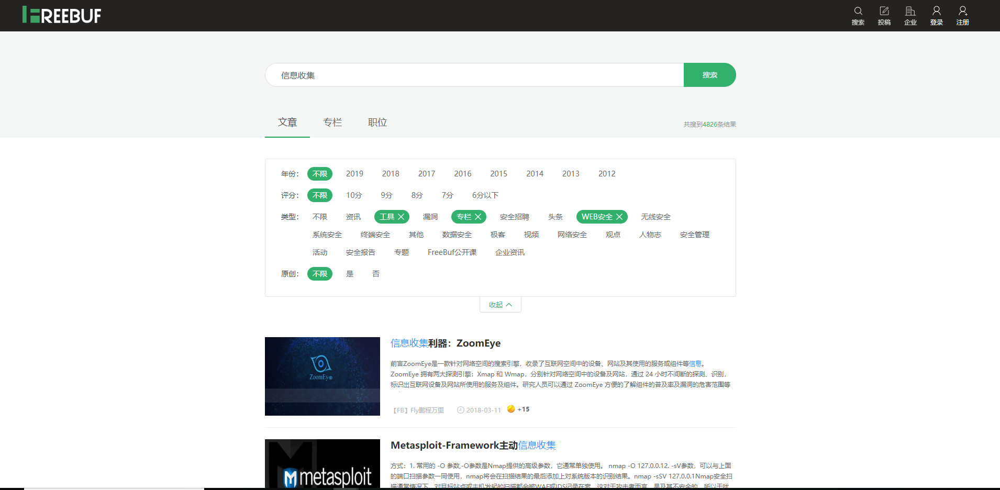
希望有心的小伙伴可以自行去看看，仔细阅读总结，会有很大的收获
先知社区
https://xz.aliyun.com/search?keyword=
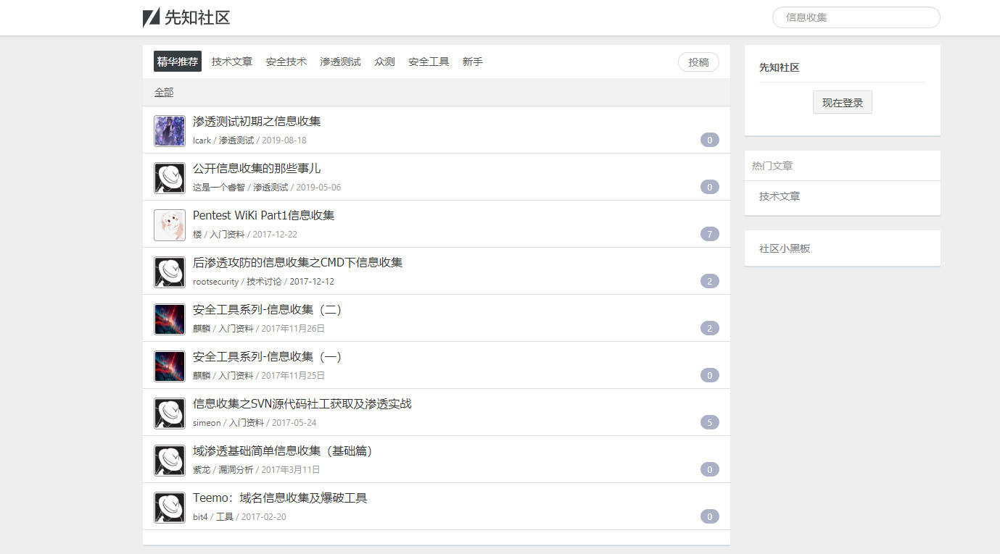
当然还有很多安全社区都是可以去搜索下这类相关的文章
安全客
https://www.anquanke.com/search?s=
安全脉搏
https://www.secpulse.com/?s=%E4%BF%A1%E6%81%AF%E6%94%B6%E9%9B%86
HACK Inn社区
https://www.hackinn.com/search/?keyword=%E4%BF%A1%E6%81%AF%E6%94%B6%E9%9B%86
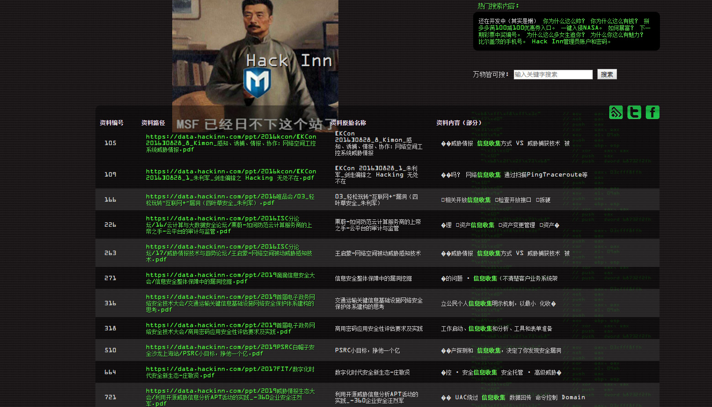
信息思维和挖洞经验也可以参考上面的几个社区，进行搜索和学习
以及乌云镜像站，学习一些经验和技巧，当然还有T00ls论坛
进入今天的主题
如何开启被动挖洞技能
Burpsuite+Xray
首先，介绍一个好的Github项目吧
https://github.com/lilifengcode/Burpsuite-Plugins-Usage
喜欢和支持记得star哦
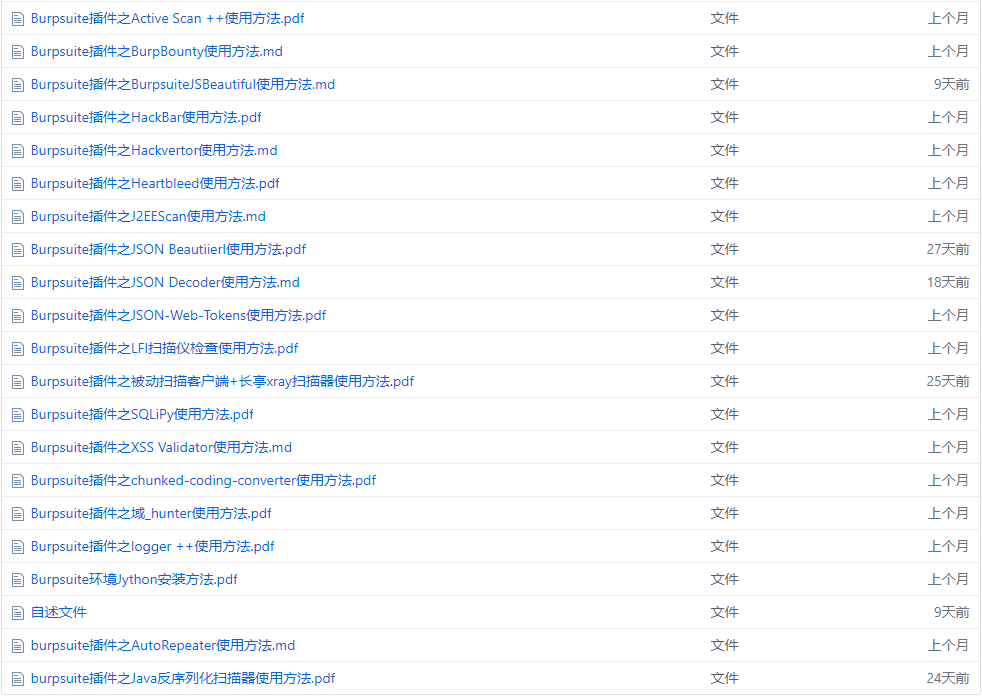
咱们要用的就是Burp的插件
Burpsuite插件之被动扫描客户端+长亭xray扫描器使用方法
Xray
https://github.com/chaitin/xray
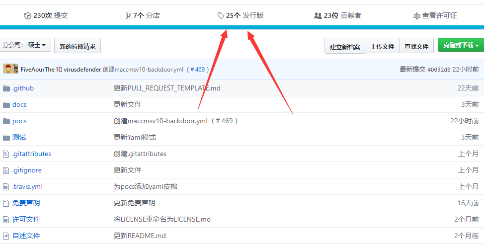
点进去下载发行版，根据自己的实际情况下载不同版本
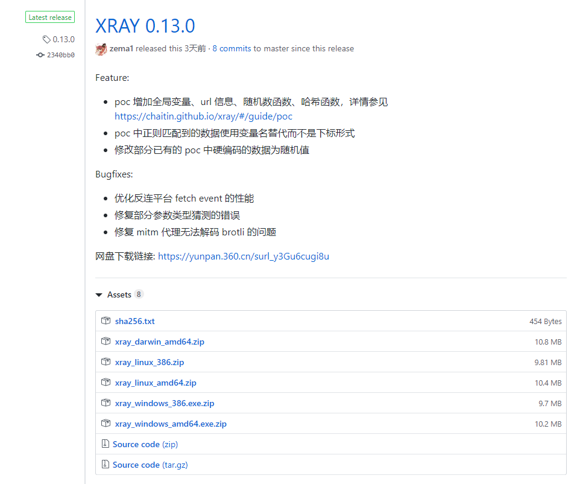
还需要一个Burp的被动扫描客户端代理
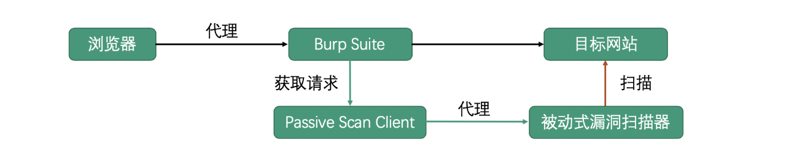
https://github.com/c0ny1/passive-scan-client
目前支持：
GourdScanV2 由ysrc出品的基于sqlmapapi的被动式漏洞扫描器
xray 由长亭科技出品的一款被动式漏洞扫描器
w13scan Passive Security Scanner (被动安全扫描器)
Fox-scan 基于sqlmapapi的主动和被动资源发现的漏洞扫描工具
SQLiScanner 一款基于sqlmapapi和Charles的被动SQL注入漏洞扫描工具
sqli-hunter 基于sqlmapapi，ruby编写的漏洞代理型检测工具
passive_scan 基于http代理的web漏洞扫描器的实现
直接下载已经编译好的就行
https://github.com/c0ny1/passive-scan-client/releases
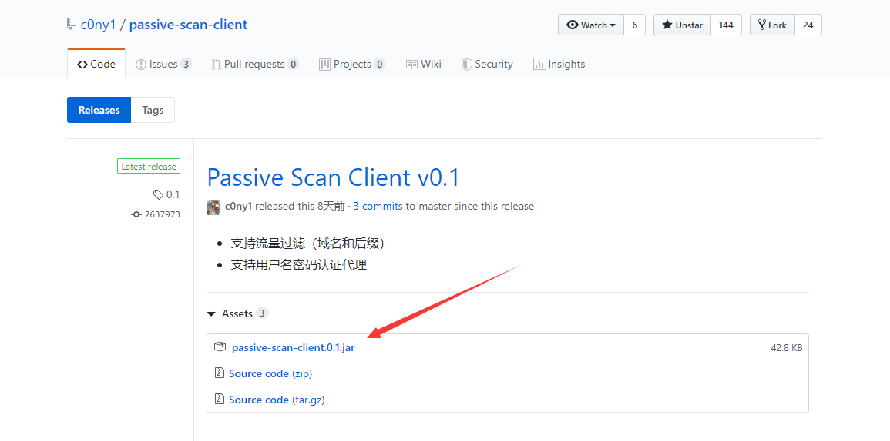
喜欢和支持记得star哦
东西准备好就可以开始了
Brup安装插件
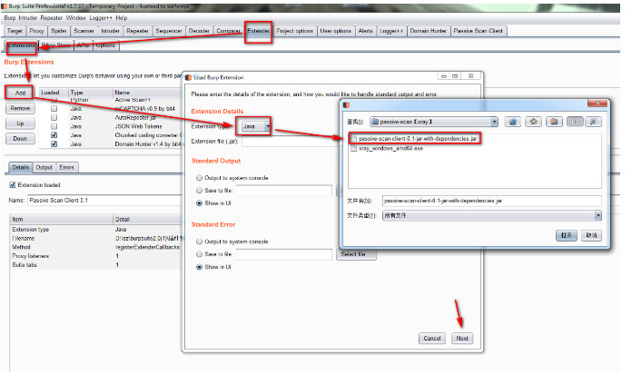
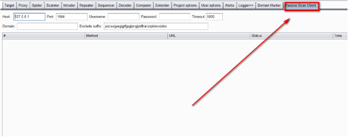
使用插件：
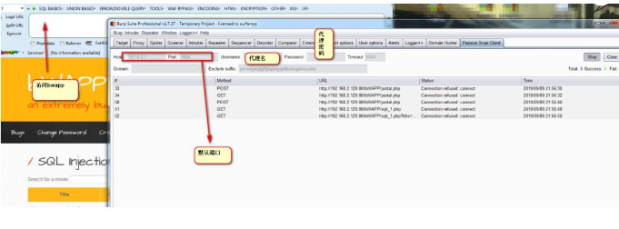
结合被动扫描插件
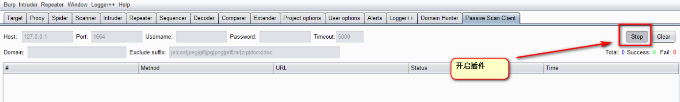
Xray启动
Xray.exe webscan --listen 127.0.0.1:1664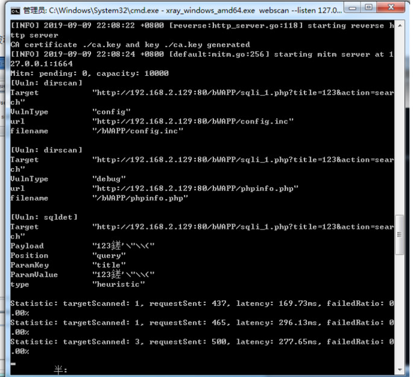
扫描器可以自己自由选择
Xray使用说明：
https://chaitin.github.io/xray/#/generic/README?id=%f0%9f%9a%80-%e5%bf%ab%e9%80%9f%e4%bd%bf%e7%94%a8

推荐阅读：
相关资料参考来自漏洞银行以及Github
本文章由HACK学习总结&整理
如需转载，请注明来源